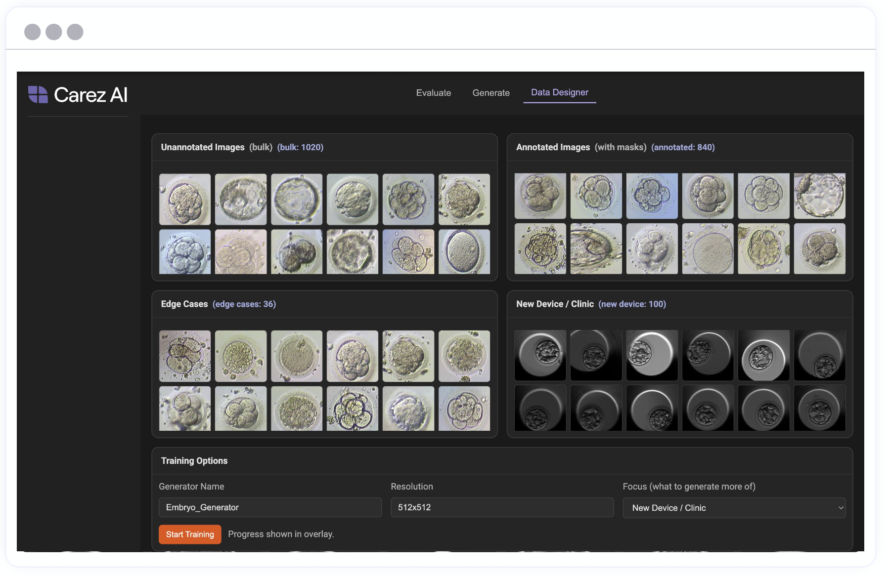

Carez AI
Synthetic medical imaging for training and validating AI systems. Grew to a five-person team and $500K+ ARR.
- Synthetic imaging
- Dataset design
- Model evaluation

01The problem
Medical AI development depends on suitable data for training and validation. Carez AI focuses on synthetic medical image datasets, including annotated data and edge cases.
The existing data-designer visual organizes datasets by annotation status, edge cases, and new device or clinic scenarios.
02What I owned
I co-founded Carez AI, grew the team to five people, and scaled the company to $500K+ ARR.
My existing portfolio records ownership of product, GTM, demos, pilots, and pricing. The model engineering and infrastructure contributions need a more precise individual-versus-team breakdown.
03Product decisions
The existing visual separates annotated and unannotated datasets and surfaces edge cases alongside new device or clinic scenarios. Those are visible product choices; the reasoning behind them has not yet been documented here.
04Technical approach
- Synthetic medical image datasets for AI training and validation.
- Dataset organization around annotations and edge cases.
- A data-designer interface with generation and evaluation workflows.
The model architectures, training framework, backend, and cloud stack are not yet confirmed for this case study.
05What shipped
A synthetic medical imaging platform, with product demos and pilot work described in the existing portfolio. The data-designer visual shows the product surface; it is not a release record.
06Outcomes & lessons
Five-person team. $500K+ ARR. These are the company milestones supplied for this portfolio.
They establish business progress, not model quality or clinical performance.